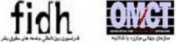

|
|
|
Browsing
Contact Us |
Campaigners |
Face to Face |
Tribune |
Interview |
News |
On the Web |
One Million |
Report
Farsi | Français | German | Italian | Spanish | العربية Also in this section
|
 End Harassment of Six Human Rights Defenders in IranSaturday 20 August 2011 View online : International Federation for Human Rights The Observatory for the Protection of Human Rights Defenders, a joint programme of the International Federation for Human Rights (FIDH) and the World Organisation Against Torture (OMCT), requests your urgent intervention in the following situation in Iran. Description of the situation: The Observatory has been informed by reliable sources of the enforced disappearance of Mr. Kouhyar Goudarzi, member of the Committee of Human Rights Reporters (CHRR), the summons against Mr. Ali Kalaei, a former member of the CHRR, the arbitrary arrest and ongoing arbitrary detention of Messrs. Ahmad Ghabel, a religious scholar and activist fighting against death penalty and reporting on extra-judicial executions in Iran, Saeed Jalalifar, member of the CHRR and a former member of the Association for Defence of Street and Working Children, and Kayvan Samimi Behbahani, a 67 year-old human rights defender and journalist, and of the ongoing judicial harassment against, Ms. Shiva Nazarahari, member of the CHRR and of the “One Million Signatures” campaign. According to the information received, around July 30, 2011, Mr. Kouhyar Goudarzi was arrested in Tehran. As of issuing this urgent appeal, his whereabouts remain unknown. In the morning of July 31, 2011, his mother Ms. Parvin Mokhtar’e was arbitrarily arrested at her home in Kerman, by four plainclothes agents, without a warrant. She is currently detained at the Central Prison of Kerman. While in detention, she has been informed that she was accused of “insulting the Supreme leader”, “propaganda against the regime”, and “acting against national security”, whereas she has no political or human rights-related activities. The Observatory believes that her arrest and detention are related to the human rights activities of her son. The Observatory recalls that Mr. Kouhyar Goudarzi was previously arrested in December 2009 [1] and subsequently sentenced to one year in prison [2] , on charges among others, of “propaganda activity against the regime through effective collaboration with the Committee of Human Rights Reporters website”, “collection and publishing of biased news against the regime and transfer of this information to terrorist organisations based abroad” as well as “interview with foreign media and publishing articles in websites,” pursuant to Iranian Criminal Code. He served the sentence and was released on 14 December 2010. On July 25, 2011, Mr. Ali Kalaei received a summon order which gave him three days to appear before the Executive Branch of Evin Prison, to serve his seven-year imprisonment sentence. He was sentenced in December 2010 on charges of “propaganda against the system”, “publishing false reports about prisoners”, “giving interviews”, “assembly and collusion with intent to commit crimes through membership of the CHRR”. Mr. Kalaei was previously detained on three occasions, in December 2007, February 2010, and May 2010. [3] No information could be obtained since then as to his situation. On July 31, 2011, Mr. Ahmad Ghabel was taken to Vakilabad prison to serve a twenty-month sentence, on charges of “offending the Leader of the Revolution” and “propaganda against the system” pursuant to Articles 6 and 9 of the Press Law, which the Appeals Court in Mashhad later upheld. He was previously detained on three occasions. He first spent 125 days in solitary confinement in 2001, he was then arrested on December 20, 2009 and released on bail on June 11, 2010, and after disclosing that mass executions had taken place in Vakilabad Prison of Mashhad, he was detained for the third time on September 14, 2010 and released on bail on December 26, 2010. On July 31, 2011, Mr. Saeed Jalalifar was arrested and transferred to the Evin prison. He was informed by the judge of the Islamic Revolution Court that he would remain in detention until a date is scheduled for his trial. Mr. Jalalifar was first arrested on November 30, 2009 for “engaging in propaganda activities against the regime” and released on bail on March 16, 2010. His new arrest is related to the same case. In addition, Mr. Kayvan Samimi Behbahani, former member of the Association for the Defence of Press Freedoms, a member of the National Council for Peace, member of the Committee for Investigation of Arbitrary Detentions and member of the Committee for the Defence of the Right to Education, remains detained at Rajaieshahr prison. Although he is suffering from a risky liver ailment, prison authorities are refusing to take him to hospital. He was arrested after the presidential election in 2009 and sentenced to six years’ imprisonment and 15 years ban on political, social and cultural activities. He had also been a political prisoner under the former regime prior to the Islamic revolution. The Observatory also deplores the ongoing judicial harassment against Ms. Shiva Nazarahi. [4] Ms. Nazarahi was sentenced on September 18, 2010, following her arrest by the Ministry of Intelligence on June 14, 2009, and her subsequent arbitrary detention, including three months in solitary confinement, to six years in prison and 76 whiplashes, on charges of "attempts to deface the Islamic Government", "disturbing the public peace of mind" and "waging war against God". On January 8, 2011, Branch 36 of Tehran Appeals Courts sentenced Ms. Shiva Nazarahari to 4 years imprisonment to be spent in internal exile away from her home. As to date, she remains free on bail, but she stands a risk of arrest any time. The Observatory strongly condemns these arbitrary arrests, detentions and acts of judicial harassment, which merely seem to aim at sanctioning the peaceful and legitimate activities of these human rights defenders, amid the continuing repression of the Iranian civil society. The Observatory urges the Iranian authorities to put an end to these acts of harassment against human rights defenders, to immediately disclose the whereabouts of Mr. Kouhyar Goudarzi, to immediately and unconditionally release those presently detained in the country, and more generally to conform to the United Nations Declaration on Human Rights Defenders, the Universal Declaration of Human Rights and international human rights instruments ratified by Iran. Actions requested: Please write to the Iranian authorities and ask them to: i. Guarantee in all circumstances the physical and psychological integrity of Ms. Shiva Nazarahari, Ms. Parvin Mokhtar’e and Messrs. Kouhyar Goudarzi, Ali Kalaei, Saeed Jalalifar, Ahmad Ghabel, Kayvan Samimi Behbahani as well as all human rights defenders and their families in Iran; ii. Immediately and unconditionally disclose the whereabouts of Mr. Kouhyar Goudarzi and ensure his access to his lawyers and families; iii. Release Messrs. Kouhyar Goudarzi, Ali Kalaei, Saeed Jalalifar, Ahmad Ghabel and. Kayvan Samimi Behbahani immediately and unconditionally as their detention only aims at sanctioning their human rights activities; iv. Release Ms. Parvin Mokhtar’e immediately and unconditionally as her detention seems to be related to the human rights activities of her son; v. Put an end to any kind of harassment – including at the judicial level – against Ms. Shiva Nazarahari, Ms. Parvin Mokhtar’e and Messrs. Kouhyar Goudarzi, Ali Kalaei, Saeed Jalalifar, Ahmad Ghabel, Kayvan Samimi Behbahani and more generally against all human rights defenders in Iran. vi. Conform in any circumstances with the provisions of the Declaration on Human Rights Defenders, adopted on December 9, 1998 by the United Nations General Assembly, in particular:
vii. Ensure in all circumstances respect for human rights and fundamental freedoms in accordance with international human rights standards and international instruments ratified by Iran. Addresses: • Leader of the Islamic Republic, His Excellency Ayatollah Sayed Ali Khamenei, The Office of the Supreme Leader, Shahid Keshvardoost St., Jomhuri Eslami Ave., Tehran, Islamic Republic of Iran, E-Mail: info_leader@leader.ir, Faxes: + 98 21 649, + 98 21 649 / 21 774 2228, info_leader@leader.ir • President Mr. Mahmoud Ahmadinejad, the Presidency, Palestine Avenue, Azerbaijan Intersection, Tehran, Islamic Republic of Iran, Fax: + 98 21 649 5880. • Head of the Judiciary, His Excellency Ayatollah Sadeq Larijani, Ministry of Justice, c/o Public relations Office, Number 4, 2 Azizi Street, Vali Asr Ave., above Pasteur Street intersection, Tehran, Islamic Republic of Iran, Fax: +98 21 879 6671 / +98 21 3 311 6567, Email: irjpr@iranjudiciary.com/ bia.judi@yahoo.com / info@dadgostary-tehran.ir • Minister of Foreign Affairs, Ministry of Foreign Affairs, Sheikh Abdolmajid Keshk-e Mesri Av, Tehran, Islamic Republic of Iran, Fax: +98-21-66743149 • Permanent Mission of the Islamic Republic of Iran, Chemin du Petit-Saconnex 28, 1209 Geneva, Switzerland, Fax: +41 22 7330203, Email: mission.iran@ties.itu.int • Embassy of Iran in Brussels, 15 a avenue Franklin Roosevelt, 1050 Bruxelles, Belgium, Fax: + 32 2 762 39 15. Email: iran-embassy@yahoo.com Please also write to the diplomatic representations of Iran in your respective countries. |